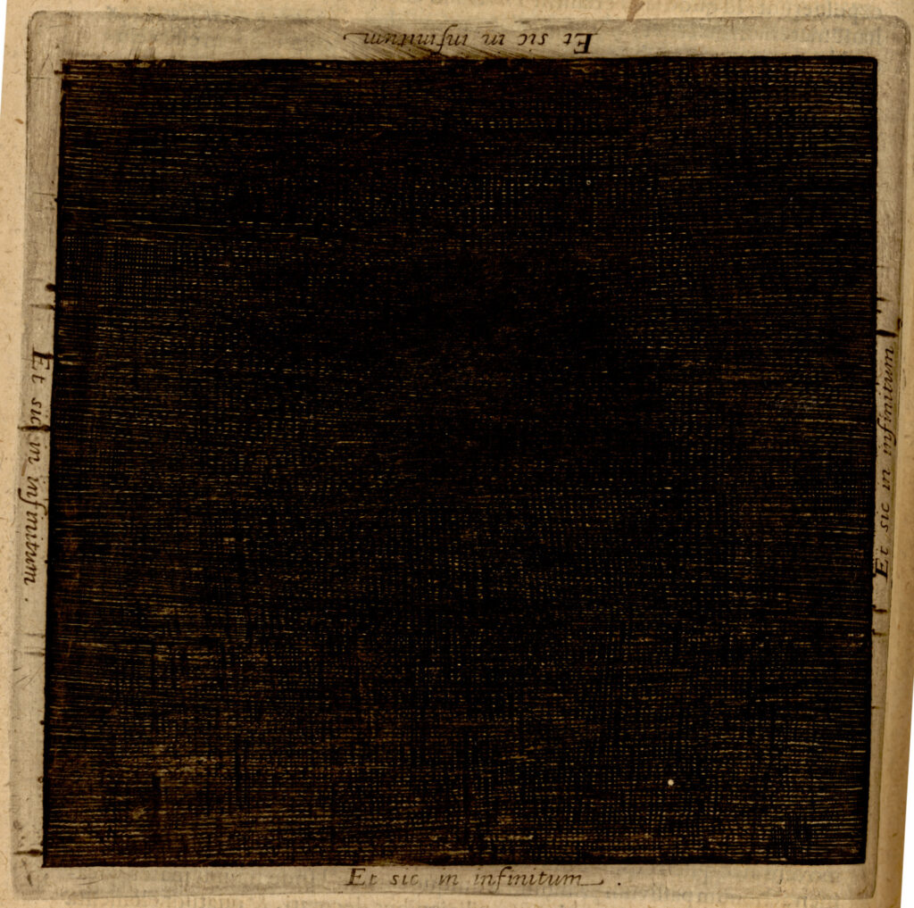
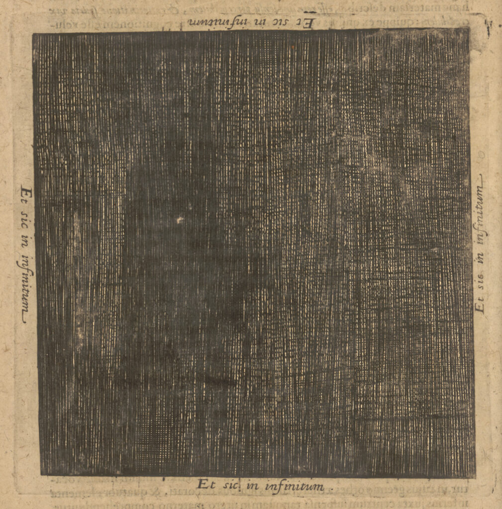

Die Alchemie des Radierens. Merian als Künstler und als Alchemist




hier gezeigt Matthäus Merian d.Ä., De tenebris (Et sic in infinitum) für Robert Fludd, Utriusque cosmi maioris scilicet et minoris metaphysica, physica atqve technica historia: in duo volumina secundum cosmi differentiam diuisa, Oppenheim: Johann Theodor de Bry 1617ff., Bd. 1 (Tomus primus, Tractatus primus) De macrocosmi structurae ejusque creaturarum originis historia, 1617, S. 26, UB Frankfurt, (links) Sign. Occ. 15 Bd. 1,1 und (rechts) weiteres Exemplar Occ. 37 Bd. 1,1
Lässt man beispielsweise den Blick durch die Alchemische Weltlandschaft wandern, so drängt sich die Frage auf, ob der Künstler dieses komplex gestalteten, detailliert ausgearbeiteten und nuanciert schraffierten Systemblatts, Matthäus Merian d.Ä., selbst Kenntnis von der geheimen Kunst der Alchemie hatte.
Der Entstehungsprozess einer Radierung, wie der Alchemischen Weltlandschaft, ist ein hoch komplexer, mehrstufiger, transformativer Vorgang: das Stechen eines seitenverkehrten Motivs in eine entsprechend präparierte Metallplatte, das sich scheinbar durch wundersame Weise mit Hilfe einer Ätzflüssigkeit in das Material hineinfrisst; das Einfärben der Platte mit Tinte, die nur in den Vertiefungen haften bleibt, um dann während des Druckprozesses an ein weißes Blatt abgegeben zu werden und einen seitenrichtigen Abdruck zu hinterlassen.[1] Es erscheint nicht abwegig, dass die frühneuzeitlichen Künstler in diesem Prozess etwas von der ‚Großen Kunst‘ wiederentdeckten und sich teils selbst als radierende Alchemisten wahrnahmen, deren Handwerk für Außenstehende ebenso rätselhaft angemutet haben mag wie das der laborierenden Alchemie.
Die Wege von Künstlern und Alchemisten kreuzten sich in vielerlei Hinsicht. Sie waren Rivalen und Verbündete zugleich, verfolgten sie doch ein gemeinsames Ziel: die Transformation von Materie. Während Künstler der Alchemie auf kunsttechnologischer Ebene zahlreiche Innovationen zu verdanken hatten, wie beispielsweise in der Herstellung von Farben und der Verarbeitung von Metallen, so beäugten sie die Goldmacherei skeptisch und warfen den Alchemisten Vermessenheit gegenüber dem Schöpfergott vor, dessen Primat dadurch bewusst herausgefordert wurde. Alchemisten wiederum sahen die Erzeugnisse des Kunsthandwerks und der bildenden Künste lediglich als zweitklassige Imitationen der Natur, die in der Transmutation versagten.[2] Dieses ambivalente Verhältnis brachte gerade aufgrund der ihm innewohnenden Rivalität neue und verbesserte Methoden hervor. Die Radierkunst ist ein Erzeugnis dieser fruchtbaren Begegnung zwischen Kunst und Alchemie.
Dass ein Interesse an der Alchemie mit der Praxis des Radierens Hand in Hand ging, zeigt der Fall Parmigianino. Der Italiener war einer der wenigen Maler, die dieses Handwerk beherrschten. Teil der Legende um den Künstler sind aber auch seine alchemistischen Neigungen, die, will man Vasari Glauben schenken, letztendlich zu seinem finanziellen Ruin geführt haben.[3] Womöglich ist es aber diesem Exkurs in alchemistisches Territorium geschuldet, dass Parmigianino begann, sich in der Radierkunst zu versuchen und sie letztendlich auch als eigenständige Kunstform etablierte. Dies muss zwangsläufig mit einer intensiven Phase des Experimentierens mit verschiedenen Techniken, Materialien und Chemikalien einhergegangen sein.[4]
Die Alchemie steckt bei der Radierung vor allem im Ätzvorgang der Platte, während dessen sich das vom Künstler in den Ätzgrund geritzte Motiv scheinbar wie von selbst in das Metall gräbt. Anders als beim Kupferstich ist die Linienführung der Radierung daher wesentlich freier und das Gesamtbild wirkt weniger starr. Ab 1600 war nördlich der Alpen die Salpetersäure (HNO₃), besser bekannt als Aqua fortis, das Ätzmittel der Wahl.[5] Sie wurde seit dem 13. Jahrhundert in einem aufwändigen Destillationsverfahren hergestellt. Rezepturen und Angaben zur Verwendung finden sich oft in alchemistischen Handschriften.[6] Martin Ruland d. J. beschreibt dieses ‚starke Wasser‘ in seinem Lexicon Alchemiae u. a. als Lösungsmittel für Gold.[7] Salpeter spielte nicht nur als Bestandteil dieses Scheidemittels eine Rolle, sondern auch bei sämtlichen anderen alchemistischen Prozessen.[8] Vor allem Paracelsus und seine Anhänger räumten dem Salniter sowohl eine besondere makro- als auch mikrokosmische Bedeutung ein. Es handele sich hierbei, wie der Schweizer Arzt und Alchemist in seiner Grossen Wundartzney ausführt, um eine von den Gestirnen ausgehende Emanation, die makrokosmisch für das Zustandekommen von Gewittern und mikrokosmisch für fiebrige Erkrankungen im menschlichen Körper verantwortlich sei. Aus Salpeter bestünde nach Robert Fludd (1574-1637) zudem der lebenspendende, luftige Geist, mit dem der Kosmos seiner Auffassung nach durchzogen war.[9] Im 16. Jahrhundert hatte sich eine regelrechte Industrie zur Gewinnung des Salpeters entwickelt, da er auch für Schwarzpulver (aus Salpeter, Kohle und Schwefel) verwendet wurde.[10] Stets wird dieser Stoff mit transformativen Prozessen assoziiert, die in der Freisetzung von Energie kulminieren. Auch der Ätzvorgang ist eine exotherme Reaktion, bei der Wärme freigesetzt wird.[11]
Wenngleich ungewiss ist, wie vertraut Künstler mit der Herstellung und alchemistischen Bedeutung des Aqua fortis waren, das sie in der Regel bereits fertig zubereitet erwarben, so lässt sich mit Sicherheit sagen, dass sie den Umgang mit dem ‚starken Wasser‘ meisterhaft beherrschten und um seine das Metall ätzende, aber durchaus auch gesundheitsschädliche Wirkung wussten. Scheinbar spielerisch machten sie sich dieses Wissen bei der tonalen Abstufung von Schattierungen zunutze, indem sie die Metallplatte der Ätzflüssigkeit kürzeren oder längeren Zeiträumen aussetzten, manchmal auch mehrstufig wiederholten oder die Konzentration der Ätzflüssigkeit variierten.
Die Radierkunst kennt nur Schwarz und Weiß. Kaum ein anderes Medium scheint besser geeignet, um alchemistisches Gedankengut zu visualisieren, in dem es so häufig um die separatio und coniunctio, die Trennung und Zusammenführung von Gegensätzen geht. Die Hell-Dunkel-Kontraste in Merians Alchemischer Weltlandschaft verleihen dem Blatt daher nicht nur Plastizität und Tiefenräumlichkeit, sondern sind zugleich sinnstiftend für die Interpretation. Der Gehalt des Systemblatts generiert sich in eben dieser Kontrastierung von Licht und Schatten. Ikonographisch werden die Polaritäten durch Sol und Luna repräsentiert. Merian belässt es aber nicht bei dieser symbolischen Gegenüberstellung, sondern unterstreicht sie zusätzlich durch gezielt stärker oder schwächer ausgeprägte Schraffuren. Optisch scheint das Blatt vertikal in zwei Hälften zu zerfallen, deren Achse exakt durch die Bildmitte verläuft. Besonders deutlich wird die unterschiedliche Bearbeitung mit Blick auf die Wolkenbänder. Während sie auf der linken Tagseite durch einfache Parallelschraffuren entstehen, sind es auf der rechten Nachtseite dichte Kreuzschraffuren, aus denen sie geformt werden.
Es existieren keine schriftlichen Zeugnisse über eine Auseinandersetzung vonseiten Merians mit der Alchemie. Die komplexen Bildfindungen gehen vermutlich nicht (allein) auf den Künstler zurück und können daher nur als ein als Indiz für eine Kenntnis alchemistischer Theorien und Praktiken gewertet werden. Ein solches Indiz hat Michael Gaudio in Emblem XXI von Michael Maiers Atalanta fugiens (1618) erkannt.[12] Das Icon zeigt einen Adepten, der mit einem überdimensionalen Zirkel symbolisch das Opus magnum nachvollzieht. Die beiden anthropomorphisierten Polaritäten und die geometrischen Figuren sind hier als Stufen des Transmutationsprozesses zu verstehen und weisen gleichzeitig auf die Parallelen zwischen Alchemie und Geometrie hin. Als Paradebeispiel für eine unlösbare geometrische Aufgabe schien die sogenannte Quadratur des Kreises geradezu prädestiniert, um die Erschaffung des Steins der Weisen zu verbildlichen.[13] Die Geometrie weist aber nicht nur eine ideelle Verwandtschaft zur Alchemie, sondern auch eine praktische zur Radierkunst auf, gehörten Zirkel und Lineal doch auch zum Werkzeug eines jeden Radierers oder Kupferstechers.[14] Insofern mag man in dem von Merian gezeigten, zeichnenden Adepten durchaus eine selbstreferentielle Note erkennen. Während ikonographische Analysen jedoch nicht ausreichend sind, um sich der ‚Alchemie des Radierens‘ anzunähern, sei ein anderer methodischer Zugang gewählt, der der Produktionsästhetik.[15] Diese umfasst Überlegungen zu Art und Weise der Herstellung anhand von Spuren des Entstehungsprozesses im fertigen Werk. Über Merians Werkprozess ist immerhin bekannt, dass er sich bei der Präparation des Ätzgrundes einer Innovation bediente, die auf seinen Lehrer, Dietrich Meyer, zurückgeht. Der sogenannte weiche Ätzgrund, bei dem man dem Bienenwachs, mit dem man die Metallplatte traditionell überzog, zusätzlich Harz oder Asphalt beimischte, erlaubte eine noch feinere Ausführung der Motive.[16] Für den Ätzvorgang, so weiß Joachim von Sandrart in seiner Teutschen Academie (1675) zu berichten, habe Merian gemein Scheidwasser verwendet.[17]
Exemplarisch lässt sich Merians Vorgehen in seinen Illustrationen für die Visualisierung der Kosmogenese in Robert Fludds Utriusque cosmi (1617) nachvollziehen. Für den Zustand des Nichts vor dem biblischen Fiat lux, der Schöpfung des Lichts, wurde eine Darstellungsform gewählt (Abb.>),[18] die den modernen Betrachter an Kasimir Malewitschs Schwarzes Quadrat (1915) denken lässt: eine quadratische, durchgehend aber nicht homogen radierte Fläche, die die lineare Kunst der Radierung zu negieren scheint. In mehreren Schichten hat Merian das Quadrat bearbeitet. Der Künstler ließ allerdings kein symmetrisches Gitternetz entstehen, sondern setzte weitere spiralförmige, an Wolken erinnernde Strukturen in das Schwarz. Jegliche Kontraste sind abwesend und doch erzeugt der Verlauf der Radiernadel eine tiefenräumliche Struktur. Während des Ätzvorgangs wurden die feinen, nah beieinander liegenden Gräben im Metall zusätzlich vertieft und verbreitert, ohne dass die Textur des Linienwerks im Druck verloren ging.[19] In der Sprache der Alchemie, wie auch Fludds begleitender Text deutlich macht, ist hier die Phase der nigredo dargestellt. Eindrücklicher könnte die Schwärzung, die erste Stufe in der Bereitung des Steins der Weisen, wohl kaum visualisiert werden. Für Fludd stellen die Dunkelheit, das Nichts und das Chaos, aus dem das Licht entsprang, den Ursprung allen Seins dar. Mit dem Licht als Manifestation des Göttlichen nimmt die Schöpfung ihren Anfang.[20] Entsprechend ist das schwarze Quadrat im zweiten Bild zu Fludds Kosmogenese von ersten Lichtstrahlen durchbrochen, die das Chaos allmählich in symmetrischen Strukturen zu ordnen beginnen (Abb.>).[21]
Zwar basieren Merians Illustrationen vermutlich auf Skizzen, die Fludd zuvor angefertigt hatte,[22] die komplex-monochrome Ausführung des vielschichtigen schwarzen Quadrats der Schöpfung muss jedoch dem Künstler zugeschrieben werden. Nur Merian verfügte über die Expertise, wie sich der Ätzvorgang auf die von seiner Hand gesetzten Linien auswirken würde und welche ästhetische Wirkung dadurch zu erzielen sei. Es ist verlockend, diese Bilder von der Erschaffung des Kosmos als Ausgangspunkt zu nehmen für Reflexionen über eine Metaebene im künstlerischen Schaffensprozess. Dieser scheint konträr zur Kosmogenese zu verlaufen. Während letztere im Nichts ihren Anfang nimmt, ist die Hand des Künstlers nirgends präsenter als in der völligen Abwesenheit des Lichts. Fludds schwarzes Quadrat treibt diesen Widerspruch ins Extrem. Das Nichts wird durch ein Übermaß an verdichteter Materie visualisiert. Die Erschaffung des Lichts erlaubt zwar ein Sichtbarwerden von formenden Strukturen, drängt die Präsenz des Künstlers zugleich aber zurück. Dort wo Licht ist, bleibt die Druckplatte unversehrt. Schatten sind die Spuren der Radiernadel und des künstlerischen Werkprozesses im Dialog mit dem ätzenden Aqua fortis. Und doch ist es letztlich die Hand des Künstlers, die das Licht von der Dunkelheit scheidet, wie das ‚starke Wasser‘ Gold und Silber zu trennen vermag. Bedenkt man den kosmologischen Stellenwert, den der Salpeter für Fludd hatte, so erfährt der Ätzvorgang, bei dem diese Ingredienz beteiligt war, eine weitere, kosmologische wie produktionsästhetische Dimension.
Mit der Herstellung einer Druckplatte war der Entstehungsprozess eines druckgraphischen Blattes bei Weitem noch nicht abgeschlossen. Das Einfärben der Platte mit eigens zubereiteter Tinte und der kraftaufwändige Druckvorgang fanden jedoch separat statt, zeitlich und räumlich versetzt und in der Regel durch anderes, spezialisiertes Personal. Erst in der Druckwerkstatt wurde das quasi-alchemistische Opus der Radierkunst vollendet und das Können des Radierers sichtbar. Der Erfolg hing maßgeblich von der Expertise des Druckers in Bezug auf Material und Technik ab. Wenngleich ungemein schlechter dokumentiert, beforscht und oft als selbstverständlich erachtet, ist die Radierkunst ohne diesen entscheidenden letzten Schritt undenkbar.[23] Die Alchemie des Radierens macht die Zusammenarbeit mehrere Akteure erforderlich. Es bedarf neben den eigentlichen Stechern nicht nur der Entwerfer, sondern auch der Drucker und nicht zuletzt der Verleger. Für das Gelingen dieses Opus magnum fand Merian durch die Kooperation mit den Verlagen Johann Theodor de Brys und Lucas Jennis‘ d. J. in Oppenheim und Frankfurt am Main die besten Voraussetzungen.
Corinna Gannon
Literatur
Ruland 1612; Debus, Allen G., The Paracelsian Aerial Niter, in: Isis 55, 1964, S. 43-61; Ders., The Sun in the Universe of Robert Fludd, in: Le soleil à la Renaissance. Sciences et mythes, hg. von Université libre de Bruxelles, Brüssel 1965; Fagiolo dell’Arco, Maurizio, Il Parmigianino. Un saggio sull’ ermetismo, Rom 1970; Newman 2005; Semsch, Klaus, Produktionsästhetik, in: Historisches Wörterbuch der Rhetorik. Band 7, hg. von G. Ueding, Tübingen 2005, S. 140-154; Nova, Alessandro, Frühneuzeitliche Quellen und moderne Interpretationen. Technik, Alchemie und Antikenrezeption im Werk Parmigianinos, in: Parmigianino. Zitat, Porträt, Mythos, hg. von Alessandro Nova und Parmigianino, Perugia 2006, S. 6-14; Rösche 2008; Burioni, Matteo (Hg.), Giorgio Vasari. Das Leben des Parmigianino, Berlin 2009; Jütte, Daniel, Das Zeitalter des Geheimnisses. Juden, Christen und die Ökonomie des Geheimen (1400-1800), Göttingen 2011; Bredekamp, Horst, Beuys als Mitstreiter der Form, in: Joseph Beuys – Parallelprozesse. Archäologie einer künstlerischen Praxis, hg. von Ulrich Müller und Horst Bredekamp, München 2012, S. 22-41; Stijnman, Ad, Engraving and etching 1400-2000. A history of the development of manual intaglio printmaking processes, London 2012; Jenkins, Catherine, Drawing on the Plate. Parmigianino and Early Etching in Italy, in: Akat. The Renaissance of Etching, hg. von Catherine Jenkins, Nadine Orenstein und Freyda Spira, New York (Metropolitan Museum of Art) 2019, S. 129-135; Orenstein, Nadine; Stijnman, Ad, Bitten with Spirit. Etching Materials nd Techniques in the Sixteenth Century, in: Akat. The Renaissance of Etching, hg. von Catherine Jenkins, Nadine Orenstein und Freyda Spira, New York (Metropolitan Museum of Art) 2019, S. 15-23.
Endnoten
-
Umfassend zum Werkprozess: Stijnman, Ad, Engraving and etching 1400-2000. A history of the development of manual intaglio printmaking processes, London 2012. ↑
-
Grundlegend hierzu: Newman 2005, Kapitel 3. ↑
-
Giorgio Vasari. Das Leben des Parmigianino, hg. von Matteo Burioni, Berlin 2009, S. 32. ↑
-
Fagiolo dell’Arco, Maurizio, Il Parmigianino. Un saggio sull’ ermetismo, Rom 1970, S. 73; Nova, Alessandro, Frühneuzeitliche Quellen und moderne Interpretationen. Technik, Alchemie und Antikenrezeption im Werk Parmigianinos, in: Parmigianino. Zitat, Porträt, Mythos, hg. von Alessandro Nova und Parmigianino, Perugia 2006, S. 6-14, S. 10; Jenkins, Catherine, Drawing on the Plate. Parmigianino and Early Etching in Italy, in: Akat. The Renaissance of Etching, hg. von Catherine Jenkins, Nadine Orenstein und Freyda Spira, New York (Metropolitan Museum of Art) 2019, S. 129-135, S. 130. ↑
-
Stijnman 2012, S. 200. ↑
-
Ebd., S. 48f.; Orenstein, Nadine/Stijnman, Ad, Bitten with Spirit. Etching Materials and Techniques in the Sixteenth Century, in: Akat. The Renaissance of Etching, hg. von Catherine Jenkins, Nadine Orenstein und Freyda Spira, New York (Metropolitan Museum of Art) 2019, S. 15-23. ↑
-
Ruland 1612, S. 48f. ↑
-
Ruland 1612, S. 345-347. ↑
-
Debus, Allen G., The Paracelsian Aerial Niter, in: Isis 55, 1964, S. 43–61. ↑
-
Jütte, Daniel, Das Zeitalter des Geheimnisses. Juden, Christen und die Ökonomie des Geheimen (1400-1800), Göttingen 2011, S. 268-273. ↑
-
Stijnman 2012, S. 200. ↑
-
Michael Gaudio, Matthäus Merian’s Etchings for Atalanta fugiens, 2021, in: https://furnaceandfugue.org/essays/gaudio/index.html Zu Emblem XXI weiterführend der Beitrag von Saskia Gericke, Ikonographie des Magiers und Erfinders der Alchemie Hermes Trismegistos auf der vorliegenden Wissensplattform.↑
-
H.M.E. de Jong, Michael Maier’s Atalanta fugiens. Sources from an alchemical book of emblems, York Beach 2002, S. 169-176. Siehe auch Michael Maier, De circulo physico, quadrato: hoc est auro, eiusque virtute medicinali, sub duro cortice instar nuclei latente; an & qualis inde petenda sit, tractatus haud inutilis, Oppenheim: Johann Theodor de Bry 1616>. ↑
-
Stijnman 2012, S. 199. ↑
-
Semsch, Klaus, Produktionsästhetik, in: Historisches Wörterbuch der Rhetorik. Band 7, hg. von G. Ueding, Tübingen 2005, S. 140-154. ↑
-
Wüthrich 2007, Kap. I; Stijnman 2012, S. 197. ↑
-
Sandrart 1675, I, Buch 2 (Skulptur), Kap. VI, Vom Kupferstechen und der Etzkunst, S. 50>.
In diesem Dialog zwischen Ätzflüssigkeit und Metall ließe sich, so Gaudio, auch die Kupferplatte alchemistisch semantisieren. Im Vorwort zu seiner Atalanta fugiens (1618) bezeichnet Michael Maier die von Merian geschaffenen Radierungen als „der Göttin Venus oder dem Kupffer (…) eingegrabene Chymische Geheimnuß“, die mit ihrem Reiz und ihrer Anmut (Venere sive gratia) über die Sinne des Betrachters Eingang in seinen Verstand finden sollen. Somit setzt sich die Alchemie über die in das Metall der sinnlichen Venus gegrabenen Bilder auch rezeptionsästhetisch fort. Vgl. Michael Gaudio, Matthäus Merian’s Etchings for Atalanta fugiens, in: https://furnaceandfugue.org/essays/gaudio/index.html. Deutsche Übersetzung zit. nach: Thomas Hofmeier, Michael Maiers Chymisches Cabinet. Atalanta fugiens deutsch nach der Ausgabe von 1708, Berlin und Basel 2007, S. 77. ↑ -
Robert Fludd, Utriusque cosmi maioris scilicet et minoris metaphysica, physica atque technica historia. Tomus Primus, Oppenheim 1617, S. 26. ↑
-
Anschaulich beschrieben von Bredekamp, Horst, Beuys als Mitstreiter der Form, in: Joseph Beuys – Parallelprozesse. Archäologie einer künstlerischen Praxis, hg. von Ulrich Müller und Horst Bredekamp, München 2012, S. 22-41, S. 28f. ↑
-
Debus, Allen G., The Sun in the Universe of Robert Fludd, in: Le soleil à la Renaissance. Sciences et mythes, hg. von Université libre de Bruxelles, Brüssel 1965, S. 266f. ↑
-
Robert Fludd, Utriusque cosmi maioris scilicet et minoris metaphysica, physica atque technica historia. Tomus Primus, Oppenheim 1617, S. 29. ↑
-
Rösche 2008, S. 90. ↑
-
Stijnman 2012, S. 207f. ↑